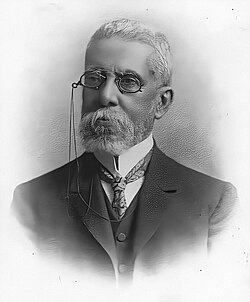

Infância e Origem

Joaquim Maria Machado de Assis nasceu no Rio de Janeiro, em 21 de junho de 1839, no Morro do Livramento. Era filho de Francisco José de Assis, um pintor de paredes mestiço, e de Maria Leopoldina Machado de Assis, uma lavadeira portuguesa.
Teve uma infância pobre e enfrentou muitas dificuldades: perdeu a mãe ainda jovem, tinha problemas de gagueira e epilepsia, e nunca frequentou escolas formais regularmente. Apesar disso, foi um autodidata: aprendeu a ler e escrever com a ajuda de amigos, padres e de sua madrinha, e desde cedo demonstrou enorme talento para as letras.
Biografia de Machado de AssisInício da Carreira Literária
Na juventude, Machado trabalhou como tipógrafo na Imprensa Nacional, onde teve contato com livros, intelectuais e escritores da época. Aos poucos, começou a publicar poemas, crônicas e peças de teatro em jornais e revistas. Seu primeiro livro foi de poesia — “Crisálidas” (1864).
As Fases Literárias
A Fase Romântica
O primeiro romance de Machado foi “Ressurreição” (1872), seguido por obras como “A Mão e a Luva” (1874), “Helena” (1876) e “Iaiá Garcia” (1878). Esses romances pertencem à fase romântica de sua carreira, marcada por histórias sentimentais e idealizadas.
A Fase Realista — O Gênio de Machado
A partir de 1881, com a publicação de “Memórias Póstumas de Brás Cubas”, Machado inaugura o Realismo no Brasil e revoluciona a literatura nacional. Nessa fase, ele adota uma visão crítica, irônica e profunda da sociedade.
Principais obras dessa fase:
- Memórias Póstumas de Brás Cubas (1881)
- Quincas Borba (1891)
- Dom Casmurro (1899)
- Esaú e Jacó (1904)
- Memorial de Aires (1908)
Vida Pessoal e Reconhecimento
Machado casou-se em 1869 com Carolina Augusta Xavier de Novais, uma mulher culta e portuguesa, que foi seu grande amor e companheira por mais de 35 anos. A morte de Carolina, em 1904, abalou profundamente o escritor.
Machado de Assis foi um dos fundadores da Academia Brasileira de Letras (ABL) em 1897 e tornou-se seu primeiro presidente, cargo que ocupou até a morte, em 29 de setembro de 1908.
Legado Literário
Machado de Assis deixou uma obra marcada por:
- Ironia e sutileza psicológica
- Análise profunda da alma humana
- Linguagem refinada e precisa
- Crítica social e moral
Ele transformou a literatura brasileira, elevando-a a um nível universal, e é considerado o maior escritor brasileiro de todos os tempos.
Curiosidades sobre Machado
🧠 Autodidata genial
Machado de Assis nunca frequentou uma escola formal por muito tempo. Ele aprendeu a ler e escrever praticamente sozinho, com a ajuda de amigos e de pessoas próximas. Apesar de vir de uma família humilde e de ter poucos recursos, tornou-se um dos maiores escritores da língua portuguesa.
📚 Primeiro presidente da ABL
Em 1897, Machado de Assis ajudou a fundar a Academia Brasileira de Letras (ABL). Ele foi escolhido como o primeiro presidente, e ocupou o cargo até a sua morte, em 1908. A cadeira número 23 da ABL leva o nome dele em homenagem à sua importância.
❤️ Um grande amor: Carolina
Machado foi casado por 35 anos com Carolina Augusta Xavier de Novais. Quando Carolina morreu, em 1904, Machado ficou profundamente abalado e escreveu um poema emocionante em sua memória, chamado “A Carolina”.
✒️ Criador do Realismo no Brasil
Com o romance “Memórias Póstumas de Brás Cubas” (1881), Machado de Assis introduziu o Realismo no Brasil, um estilo que analisa o comportamento humano de forma crítica, irônica e psicológica.
🧍♂️ Superou preconceitos e doenças
Machado era negro, epilético e gago, vivendo em uma época em que o preconceito racial era forte no Brasil. Mesmo enfrentando essas dificuldades, conquistou respeito e admiração no meio intelectual, tornando-se símbolo de superação e talento.
🏙️ Filho do Rio de Janeiro
Machado nasceu e viveu toda a sua vida no Rio de Janeiro. Ele era muito observador da cidade e das pessoas, e por isso, muitas de suas histórias retratam o cotidiano carioca do século XIX.
📖 Um mestre da ironia
Uma das marcas mais fortes do estilo de Machado é a ironia. Ele costumava usar o humor sutil e a crítica elegante para mostrar as fraquezas humanas — como o egoísmo, o ciúme, a vaidade e a hipocrisia.
⚰️ A morte e o legado
Machado de Assis faleceu em 29 de setembro de 1908, aos 69 anos. Mesmo depois de mais de um século, suas obras continuam sendo lidas, estudadas e traduzidas em vários idiomas.